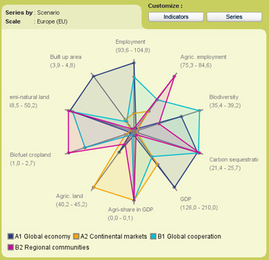
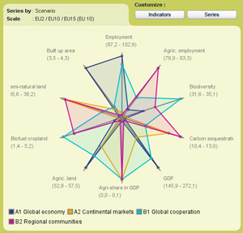
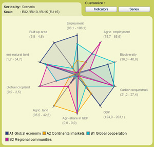

Figure 1 - Spider diagram for the baseline scenarios
From this spider diagram can be derived that there are considerable differences between the scenarios.
The Global Economy scenario combines a high general employment with high GDP, but also high carbons sequestration and high level of biodiversity. Agriculture in this scenario is a sector with a small area and smallest employment only contributing to a small extent to the GDP. Area for nature and urbanization are highest.
The Continental Market scenario combines more modest employment with second highest GDP. Of all scenarios Continental Market uses most land for agriculture and least land for nature. Biodiversity and Carbon sequestration are lowest in this scenario. Just like in the Global Economy scenario only a limited amount of land is used for biofuel production.
The Global Cooperation scenario has also a relative high employment but relative lower GDP. This scenario scores well on biodiversity, carbon sequestration and the area used for natural land. This scenario has an intermediate position for the amount of agricultural land and share of agriculture in GDP. Biofuels are stimulated in this scenario resulting in a high amount of biofuels crops.
The Regional Communities scenario is for many indicators the opposite of the Global Economy scenario. This scenario has highest agro employment, high agro share in GDP combined with low overall employment and GDP. On planet indicators this scenario takes an intermediate position.
Differences between EU10 and EU15
In figure 2 two spider diagrams are presented of the EU10 and the EU15.
The shapes of the spider diagrams differ. This shows that future developments
in the EU10 will not necessarily show the same trends as in the EU15. This especially
seems the case for the Continental Market and the Global Cooperation scenarios.
For instance in the Continental Market the highest amount of agricultural land
for the EU15 and the lowest in the EU10.
|  |  |